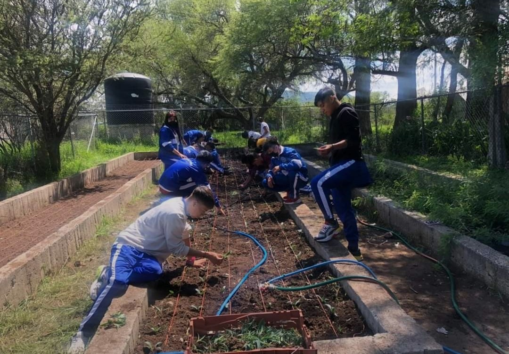
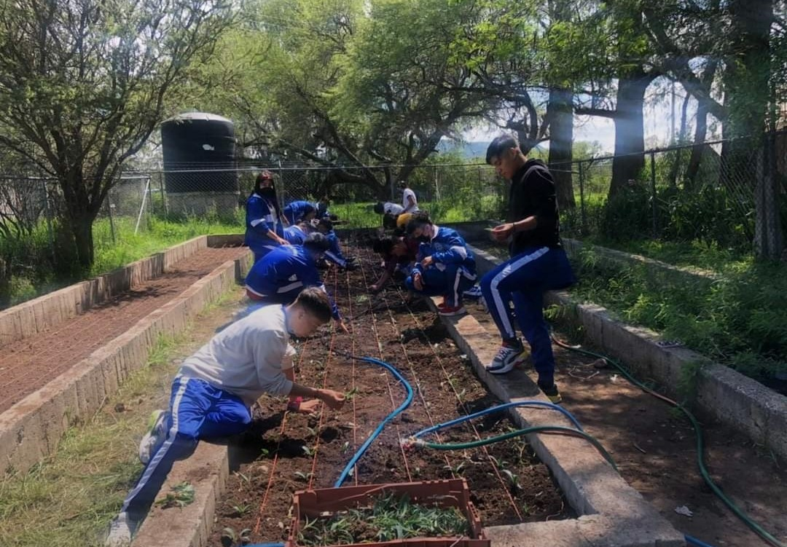

Bienvenidos al Centro de Bachillerato Tecnologico Agropecuario No.115 Dolores Jimenez y Muro
En esta institución estamos comprometidos con la educación y formación integral de jóvenes responsables, críticos y capaces de enfrentar los desafíos del mundo actual. Somos una institución de nivel medio superior que ofrece un ambiente seguro, inclusivo y dinámico, brindando a los estudiantes la oportunidad de formarse en una carrera técnica. Además, contamos con una amplia variedad de actividades deportivas y artísticas, que fortalecen el desarrollo integral de nuestros alumnos, fomentando tanto el aprendizaje académico como el crecimiento personal.
.png)
En el CBTA No. 115 contamos con docentes altamente capacitados en las distintas áreas del conocimiento, comprometidos con brindar una educación de calidad. Además, ofrecemos laboratorios equipados para clases de química, talleres especializados, salas de cómputo y múltiples espacios que apoyan y complementan el desarrollo de las carreras técnicas que se imparten.
Si decides formar parte del CBTA 115, tu etapa escolar constará de seis semestres. Durante este periodo, el alumno cursará materias clave como matemáticas, física, química, inglés, entre muchas otras, con enfoques teóricos y prácticos, adaptados a las necesidades del mundo actual y al perfil profesional del estudiante.

Durante el primer semestre, los alumnos no cursan aún la carrera técnica que eligieron o elegirán en el transcurso de ese periodo. Es a partir del segundo semestre cuando se comienzan a impartir los módulos enfocados al desarrollo de las carreras técnicas, así como las prácticas correspondientes a cada área, lo cual permite al estudiante aplicar conocimientos en un entorno real.
Al estudiar en el CBTA No. 115, podrás desarrollar tus estudios de forma regular, como en cualquier otro plantel de nivel medio superior, pero con la ventaja de que, al finalizar tu formación, también podrás egresar con un título técnico.
Las opciones de especialidad técnica que ofrecemos son:
- Técnico en Ofimática.
- Técnico en Explotación Ganadera.
- Técnico Agropecuario.
Este título técnico no solo te brinda herramientas para incorporarte al ámbito laboral, sino que también puede ser un gran apoyo al continuar tus estudios en el nivel superior.
.png)
Técnico Agropecuario
El plantel del CBTA No. 115 ofrece la carrera de Técnico Agropecuario, una especialidad que brinda a los estudiantes los conocimientos y habilidades necesarios para desempeñarse en actividades agrícolas, ganaderas y de producción sustentable. Esta formación técnica prepara a los alumnos para enfrentar los retos del sector agropecuario con responsabilidad, innovación y compromiso social, promoviendo prácticas eficientes, sostenibles y alineadas con el desarrollo rural y ambiental.
Intereses y objetivos de la carrera
Se espera que los aspirantes a la carrera de Técnico Agropecuario cuenten con las siguientes cualidades:
- Sensibilidad para el desarrollo de proyectos de bienestar social.
- Interés por el manejo de especies pecuarias, tales como bovinos, aves, caprinos y porcinos.
- Interés en el cultivo de plantas de importancia agrícola regional, conciencia y sensibilidad hacia el cuidado y la protección del medio ambiente.
El objetivo de la carrera es formar técnicos capaces de mejorar los sistemas de producción agrícolas y pecuarios, mediante el uso de diversas técnicas de producción que favorezcan el desarrollo del sector.
Asimismo, se busca que los egresados promuevan e impulsen proyectos sustentables, con un enfoque responsable hacia el entorno social y ambiental.
 

Competencias a desarrollar
- Promover la organización del personal para la producción agropecuaria.
- Diagnosticar el entorno agroecológico y plantear estrategias sustentables acorde a las necesidades del sector.
- Emplear técnicas agrícolas en actividades como el manejo del agua, del suelo y la producción de plantas.
- Manejar especies pecuarias, incluyendo bovinos, porcinos, caprinos, ovinos, aves y especies alternas.
- Procesar productos agropecuarios para la elaboración de productos hortofrutícolas, lácteos y cárnicos.

Ambitos que se podran desarrollar
- Análisis y ejecución de programas de desarrollo rural, aplicando estrategias orientadas al bienestar de las comunidades.
- Promoción agraria, elaborando proyectos de impacto social, organizando cooperativas y prestando servicios de consultoría en temas ambientales.
- Trabajo agrícola en invernaderos, realizando la siembra y cultivo de diversos tipos de semillas.
- Cría y manejo de aves y ganado, así como la explotación de especies pecuarias específicas, con fines de producción sustentable.
Materias de la carrera Tecnico Agropecuario
| Primer Semestre |
No se llevan materias relacionadas con la carrera tecnica. |
| Segundo Semestre |
Modulo I (Promueve el desarrollo sustentable). |
| Tercer Semestre |
Modulo II (Emplea tecnicas agricolas para la produccion). |
| Cuarto Semestre |
Modulo III (Maneja especies pecuarias). |
| Quinto Semestre |
Modulo IV (Procesa productos agropecuarios). |
| Sexto Semestre |
Modulo V (Opera proyectos de desarrollo sustentable). |
Técnico en Explotación Ganadera
En el CBTA No. 115 también se ofrece la carrera de Técnico en Explotación Ganadera, una opción formativa orientada al desarrollo de competencias en el manejo, reproducción, alimentación y sanidad del ganado. Esta carrera está diseñada para formar técnicos capacitados que contribuyan al mejoramiento de la productividad pecuaria, con un enfoque sustentable, ético y tecnificado, que responda a las necesidades del sector agropecuario tanto a nivel regional como nacional.
Si deseas estudiar en este plantel y elegir la carrera de Técnico en Explotación Ganadera, es recomendable que cuentes con algunos de los siguientes intereses o habilidades:
- Interés en el desarrollo del sector pecuario.
- Gusto por el manejo de diversas especies pecuarias.
- Interés en temas relacionados con la nutrición, salud y reproducción animal.
- Habilidades de comunicación, organización y planeación.
- Capacidad para seguir protocolos y procesos técnicos.
- Sentido de responsabilidad y compromiso en el cuidado de los animales.

Competencias a desarrollar
Al concluir la carrera, el egresado será capaz de:
- Aplicar técnicas de manejo y contención del ganado, garantizando el bienestar animal y la eficiencia en los procesos productivos.
- Emplear ábacos productivos y herramientas de planeación para el desarrollo de proyectos ganaderos viables y sustentables.
- Manejar medidas sanitarias adecuadas, aplicando normas de bioseguridad para prevenir enfermedades y asegurar la salud del hato.
- Elaborar dietas balanceadas para el ganado, considerando los requerimientos nutricionales de cada especie.
- Estimar costos de alimentación para proyectos ganaderos, utilizando tecnologías actuales para procesar e interpretar información técnica y económica.
.jpeg)
Al concluir la carrera, el egresado será capaz de:
- Aplicar técnicas de manejo y contención del ganado, garantizando el bienestar animal y la eficiencia en los procesos productivos.
- Emplear ábacos productivos y herramientas de planeación para el desarrollo de proyectos ganaderos viables y sustentables.
- Manejar medidas sanitarias, aplicando normas de bioseguridad para prevenir enfermedades y asegurar la salud del hato.
- Elaborar dietas balanceadas para el ganado, considerando los requerimientos nutricionales de cada especie.
- Estimar costos de alimentación para proyectos ganaderos, utilizando tecnologías actuales para procesar e interpretar información técnica y económica.
- Producir especies forrajeras y aplicar técnicas de conservación para asegurar una alimentación continua y de calidad.
- Detectar signos de enfermedad en el ganado e implementar programas de prevención y sanidad animal.
- Realizar programas de reproducción mediante métodos naturales y por inseminación artificial, contribuyendo a la mejora genética y productividad del hato.
Proposito de la carrera de Tecnico en Explotacion Ganadera
El propósito de esta carrera técnica es formar técnicos capacitados en el manejo integral del ganado, incluyendo su alimentación, reproducción y sanidad.
Asimismo, se busca que el egresado sea capaz de aplicar programas preventivos y sanitarios, así como manejar especies pecuarias alternativas, con un enfoque productivo, ético y sustentable.
Materias de la carrera de Tecnico en Explotacion Ganadera
| Primer Semestre |
No se llevan materias relacionadas con la carrera tecnica. |
| Segundo Semestre |
Modulo I (Maneja el ganado de acuerdo al sistema de produccion). |
| Tercer Semestre |
Modulo II (Alimenta al ganado de acuerdo al sistema de produccion). |
| Cuarto Semestre |
Modulo III (Aplica programas de prevencion y sanidad en el ganado). |
| Quinto Semestre |
Modulo IV (Aplica programas reproductivos en el ganado). |
| Sexto Semestre |
Modulo V (Maneja especies alternativas). |
Técnico en Ofimática
En el CBTA No. 115 se ofrece la carrera técnica de Técnico en Ofimática, dirigida a estudiantes interesados en el uso eficiente de herramientas tecnológicas para el manejo de información en entornos administrativos. Esta formación brinda conocimientos sólidos en el procesamiento de textos, hojas de cálculo, bases de datos, diseño de presentaciones y administración de redes, preparando a los egresados para integrarse al ámbito laboral o continuar sus estudios superiores en áreas relacionadas con la informática, administración y tecnologías de la información.
Los intereses y habilidades recomendables para quienes deseen cursar esta carrera técnica son:
- Habilidad para la organización y planeación, Buenas habilidades comunicativas.
- Interés en el área económico-administrativa, Gusto por el uso de tecnologías de la información.
- Habilidades básicas en el uso de equipo de cómputo y paquetería informática.
- Disposición para trabajar en equipo y sentido de responsabilidad.

Competencias que se pueden desarrollar
Al finalizar la carrera, el egresado será capaz de:
Elaborar documentos electrónicos con una presentación profesional, utilizando herramientas ofimáticas.
- Instalar, ensamblar y operar software y hardware, garantizando el correcto funcionamiento del equipo de cómputo.
- Diseñar páginas web con elementos interactivos y animaciones básicas.
- Administrar sistemas de información básicos, aplicando principios de organización, almacenamiento y seguridad de datos.
- Instalar y configurar sistemas operativos, adaptándolos a las necesidades del usuario o de una organización.
- Gestionar información mediante el uso de procesadores de texto, hojas de cálculo, software de presentación y bases de datos.
- Configurar redes de área local (LAN) y establecer conexiones básicas para la comunicación de dispositivos.
- Diseñar y administrar bases de datos, así como instalar y configurar software relacionado con su gestión.
- Instalar y configurar equipos de cómputo, asegurando su operatividad para distintos entornos administrativos o educativos.
Objetivos y propositos de la carrera
El objetivo de la carrera de Técnico en Ofimática es formar técnicos eficaces y eficientes en la obtención, gestión y procesamiento de información digital, mediante el uso adecuado de recursos informáticos, con un enfoque orientado a las necesidades del entorno administrativo, educativo y empresarial.
Materias de la carrera de Tecnico en Ofimatica
| Primer Semestre |
No se llevan materias relacionadas con la carrera tecnica. |
| Segundo Semestre |
Modulo I (Gestiona hardware y software de la ofimatica). |
| Tercer Semestre |
Modulo II (Gestiona informacion de manera local). |
| Cuarto Semestre |
Modulo III (Gestiona informacion de manera remota). |
| Quinto Semestre |
Modulo IV (Diseña y gestiona bases de datos ofimaticas). |
| Sexto Semestre |
Modulo V (Establece comunicacion ofimatica). |
Requisitos
Para ingresar en el plantel Centro de Bachillerato Tecnologico Agropecuario No. 115 "Dolores Jimenez y Muro", hay que cumplir con una serie de requisitos basicos.
1) Acta de nacimiento de la cual se solicita original y copia.
2) 2 Copias de la CURP en formato actual.
3) Certificado de Secundaria original y copia.
4) Comprobante de domicilio actual no mayor a 3 meses.
5) Correo electronico con dominio gmail.com.
6) 6 Fotografias tamaño infantil con playera del CBTa o playera color blanco.
7) Formato de hoja de registro el cual debe contener cada uno de los datos solicitados.
8) Numero de seguridad social.
9) Copia de recibo de pago de inscripcion expedido por el plantel el dia de la inscripcion.